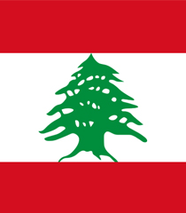
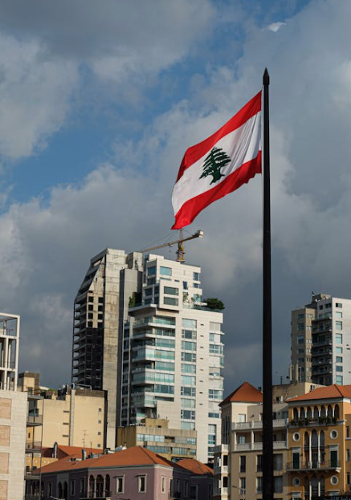

Beirut
2.379.330 Resident
Lebanon
33°53′53″N 35°30′21″E
Get More Information

Beirut
View all citiesBeirut is the capital of Lebanon and also the country's largest city. Its population is 1.2 million, but when the surrounding metropolitan area is included, the population increases to 2.1 million. Before the Lebanese Civil War, the city was nicknamed the "Paris of the East" for its cosmopolitan atmosphere.
Images Credit
Bandung
Asia Africa
City Network
Quick Link
Get in touch
Need Information?
+62 81318667479
bapperida@bandung.go.id
© BAACN - All rights reserved